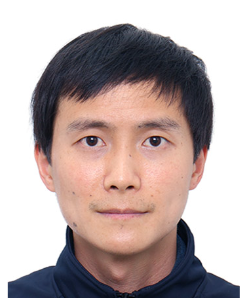

Qinyi Li, Ph.D.
Professor
Environment Research Institute, Shandong University
- qinyi.li@sdu.edu.cn
- Office
- Room K6-328, Shandong University, Qingdao

Biography
Qinyi Li earned his Ph.D. in environmental engineering at The Hong Kong Polytechnic University. He develops and applies regional chemical transport models and global chemistry–climate and Earth system models, including WRF-Chem, CAM-Chem, and CESM. A chemistry module he developed has been incorporated into the official WRF-Chem distribution.
He uses these models to study the causes of air pollution and project how atmospheric composition may change under different emissions and climate scenarios. He serves on the ozone pollution control committee of the Chinese Society for Environmental Sciences and on the early-career editorial board of China Environmental Science.
Research Interests
- Atmospheric sources, cycles, and effects of reactive halogens and nitrogen
- Development and application of regional and global atmospheric chemistry models
- Air pollution and atmospheric composition under future emissions and climate scenarios
Education and Appointments
- 2006–2010
- B.S. in Environmental Science, Sun Yat-sen University
- 2010–2013
- Master’s degree in Environmental Science, Peking University
- 2013–2018
- Ph.D. in Environmental Engineering, The Hong Kong Polytechnic University
- 2018–2022
- Postdoctoral Researcher, Institute of Physical Chemistry, Spanish National Research Council (CSIC)
- 2022–2023
- Postdoctoral Research Fellow, Department of Civil and Environmental Engineering, The Hong Kong Polytechnic University
- Jun–Oct 2023
- Research Fellow, Environment Research Institute, Shandong University
- Nov 2023–present
- Professor, Environment Research Institute, Shandong University
Awards and Honors
- Selected for China’s national talent program for early-career researchers returning from overseas
- Distinguished Young and Middle-Aged Scholar, Shandong University
- Qilu Young Scholar, Shandong University
Selected Research Projects
- Subproject under the National Natural Science Foundation of China’s Key International and Regional Research Cooperation Program, scheduled through 2029.
Selected Publications
-
Key role of continental inorganic halogens in the evolution of global air quality
Nature Communications, 17(1), 8988, 2026.
-
Reactive halogens in polluted atmospheres: Sources, processes, and impacts on secondary pollutants
Elementa: Science of the Anthropocene, 14(1), 00071, 2026.
-
Increasing soil nitrous acid emissions driven by climate and fertilization change aggravate global ozone pollution
Nature Communications, 16(1), 2463, 2025.
-
Typhoon- and pollution-driven enhancement of reactive bromine in the mid-latitude marine boundary layer
National Science Review, 11(4), nwae074, 2024.
-
Reactive halogens increase the global methane lifetime and radiative forcing in the 21st century
Nature Communications, 13(1), 2768, 2022.